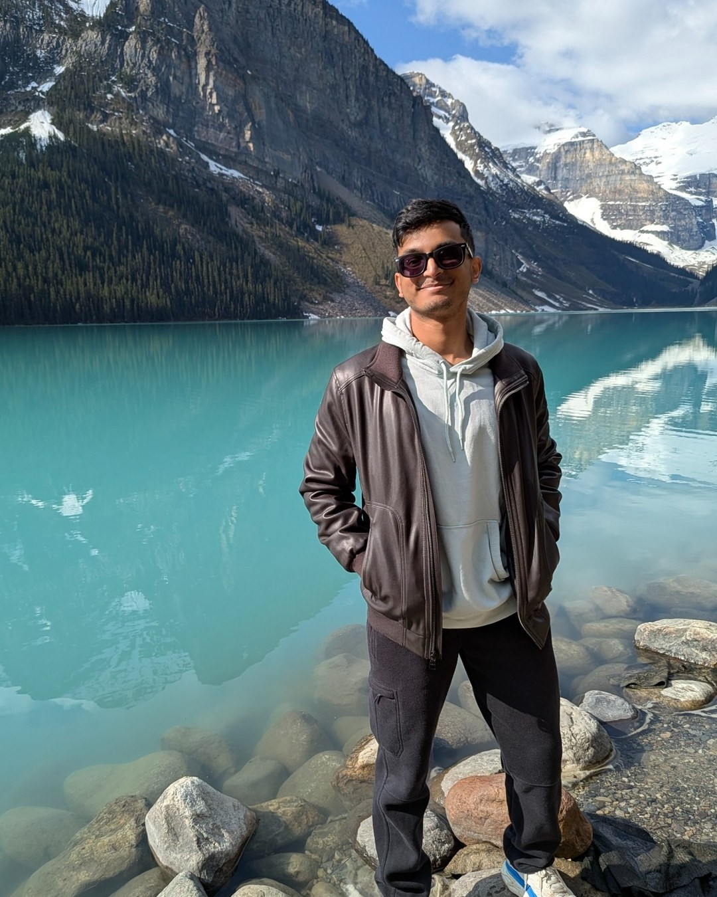
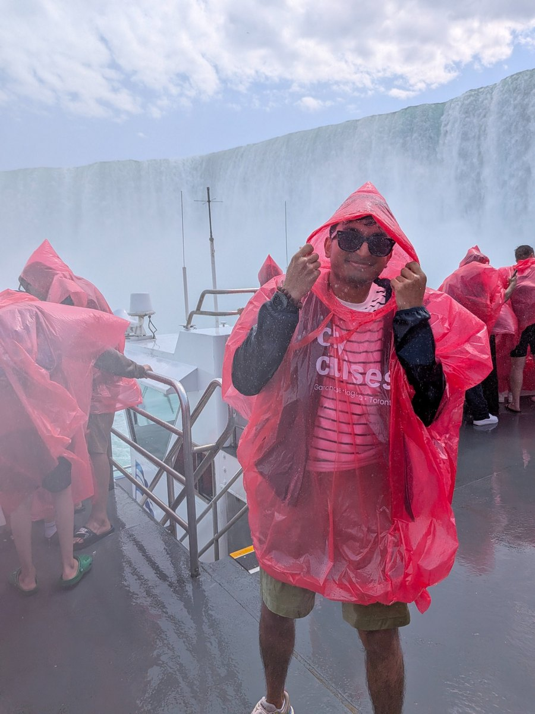

Abu Dhabi / start
This is where the map starts.
I grew up here. Most of the things on this site happened somewhere else, but this is home and the place I keep coming back to.
Field study / working map
I have a hard time leaving an interesting problem alone. Usually I end up taking it apart, building some version of it, and then trying to break what I built. This is roughly where that habit has taken me so far.
The map is cleaner than the process was.

Abu Dhabi / start
I grew up here. Most of the things on this site happened somewhere else, but this is home and the place I keep coming back to.
Ann Arbor / 2019 to 2023
I picked engineering physics because I did not want to choose between physics and engineering. Michigan gave me enough room to take that very literally. I bounced between circuits, robots, satellites, processors, and whatever else I had talked myself into that semester.
The older buildsHouston / 2023 to 2026
At Technip I spent most of my time in applied physics R&D, building molecular simulation and analysis workflows for carbon capture. Later came instrumentation and controls, while an internal AI initiative grew alongside the day job. They look separate on a CV. They did not feel separate while I was doing them.
The full work historySomewhere around here
At some point the things I did because I had to and the things I did because I could not leave them alone started overlapping.
A useful wrong turn
A GNN surrogate once looked fine until I asked the actual VLE solver to use it. The derivatives were bad enough to make the model useless. ThermoBench is the set of cheap physical checks I wished I had run first.
Full projectA sketch, not a thermodynamic test. The four verdicts change at illustrative thresholds.
A question I kept poking at
Could you detect a structural change from trajectories alone? I tested that question on two deterministic systems, without giving the detector their equations or regime labels. The boundary comparisons happen afterward.
Full projectThis trace and its score are drawn for illustration. The research detector runs on computed trajectories.
Built because the tutorial was not enough
I built a reproducible inverse-wave playground on Devito, with sparse observations, inversion baselines, blind challenges, and scoring. It began as a way to learn the framework by making something end to end.
Full projectDifferent branch. Same instinct.
Nothing has to crash for a system to get worse. An LLM change can quietly become much more expensive while every normal test still passes. I wanted CI to be allowed to care about that too.
Full projectExample rule only: warn at 8%, fail above 10%. The actual tool compares task-valid success, token use, latency, repeats, and statistical evidence.
Not everything I care about needs to become useful.
Away from the desk

I like being outside enough that I have learned not to turn it into another productivity system.
A small thing I left here
Questions I keep around
Older layers
Longboard remotes, follower robots, processors, satellite work, startup experiments. Not everything still deserves the front page. It still happened.
Open the archiveLondon / now
I am at Imperial now, studying Applied Computational Science & Engineering. I wanted to spend a year learning the mathematics and numerical methods behind the scientific software I had been building on the job. Where that work goes next is still taking shape.
Applied physicist · research engineer · Imperial MSc ACSE
That turned out to describe the rest of it pretty well too. Since then I’ve bounced through embedded systems, robotics, molecular simulation, controls, AI tooling, and a lot of scientific software. I usually end up in the same place. Some physical mess has to become something computable, and the model has to survive enough checks that I can trust it.
01 / Selected work
Not necessarily the biggest things I’ve done. Just the four closest to where I’m going.
I made this mostly because I wanted to learn Devito properly. You hide a structure in a 2D acoustic medium, put a few sources and receivers around it, and try to recover the geometry from the traces. It grew into a versioned testbed with blind challenges and reconstruction scoring.
I wanted to know whether you could spot a qualitative change in a dynamical system from the trajectories alone. No equations and no answer key. The paper is my attempt to make that precise enough to test.
This came directly out of a failed GNN/VLE project. The headline errors looked fine. The derivatives were bad enough to make the downstream solver useless. ThermoBench is the set of cheap checks I wished I had run first.
LLM changes can get quietly more expensive even when nothing obviously breaks. I wanted CI to be allowed to care about that too.
02 / How I got here
Michigan was a lot of trying things. Embedded systems, computer architecture, circuits, robotics, a nanosatellite project. Engineering physics gave me enough room to keep following whatever I found interesting without pretending it all belonged to one neat specialty.
At Technip I ended up much deeper in computational work than I expected. Most of my time was in carbon capture R&D building molecular simulation and analysis workflows. Later I moved into instrumentation and controls, while also helping start an internal AI initiative across the Americas. They look like separate branches on a résumé. In practice they kept bleeding into each other.
I came to Imperial because scientific computing is what I had mostly taught myself sideways through all of this. I wanted a year where it was the main subject, not the thing I learned because a problem forced me to.
The full chronology03 / Things that keep coming up
That is most of what I like about inverse problems and sensing. The instrument gives you one thing and you have to work backwards to the thing you actually wanted.
The VLE work beat this into me. Average error is not much comfort if the part of the surface your solver depends on is nonsense.
I am fussy about configs, tests, failure cases, and the boring plumbing. If a result depends on me remembering which script I ran, I do not really have it.